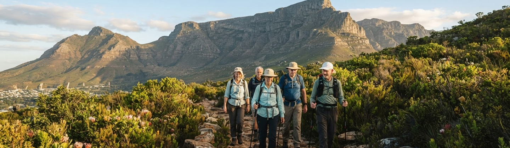
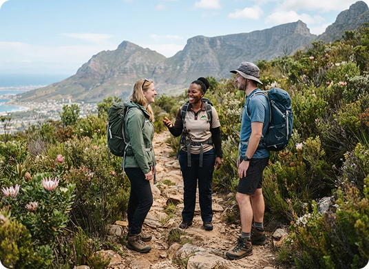
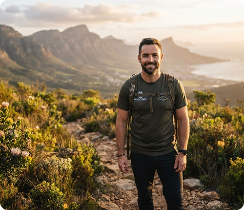

About Us

Rooted in adventure

Founded in 2024 by Liam Daniels, Adventure Escape SA grew from a passion for outdoor adventure and eco-tourism. We offer guided experiences in the Western Cape for all ages and ability levels.
Our mission
To make adventure accessible, encourage responsible eco-tourism and help people connect with nature.
Our vision
A Western Cape where more people feel confident exploring the outdoors and leave every trail with a deeper respect for the natural world.
Meet the owner

Liam Daniels, founder and owner of Adventure Escape SA.